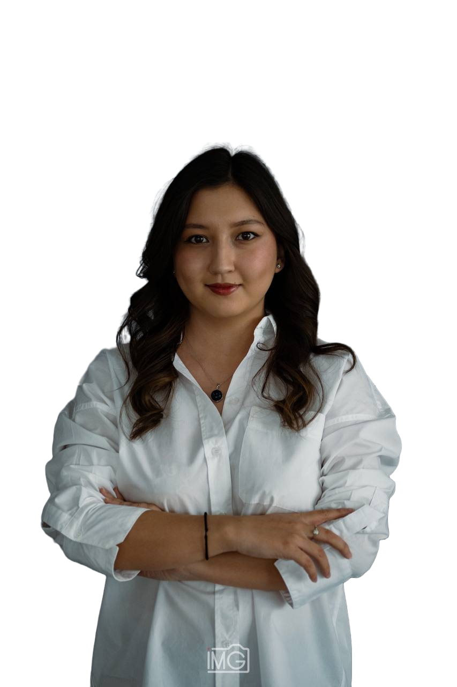

WELL
COME.

About
Skills
Laboratory
DNA sequencing Microfluidics Cell culture Protein purification Western blot Assays PCR Gel electrophoresis Imaging Cell Fixation, Staining and ImagingDigital
R Excel Word PowerPoint Python HTML CSS JavaScriptLanguage
Kazakh - Native Russian - Fluent English - IELTS 7.0 French - BeginnerExperience
National Laboratory Astana, Intern
Astana, Kazakhstan
June 2022 - September 2022
Production of Bifidobacterial Lactose-free Yogurt and its effect on Mice microbiome via examination of stool, and blood samples; Comparison of Human microbiome during and after exposure to Covid-19 via examination saliva and stool samples.
- Explored the effect of Covid-19 on the human microbiome and bacteria diversity through the implemented protocol for the lab to extract DNA from patients’ and control groups’ stool and saliva samples. Also, DNA extraction Kit’s Lab protocol was adapted to specific sample cases.
- Assessed the purity and quality of extracted DNA by nanodrop test and conducting Agarose Gel Electrophoresis. Further, packed and labeled each sample for transportation for sequencing in a foreign lab.
Start-Up and Fly, Business Development Agency, Lead Gen Specialist
San-Francisco, USA
May 2022 - September 2022
- Searched, promoted, and contacted companies and leads for strategic communication with clients. Organized appointments to negotiate with clients via Linkedin, ZOOM, and Calendly. Generated leads and recruited and coordinated them depending on qualifications and skills. Acquired skills in Sales Navigator, Google Sheets, Calendly, Excel, and official writing
Projects
“Radiation, health effects perception and anxiety 25 years after the closure of the Semipalatinsk Nuclear Test Center: A Comparison between the younger generation and the older adults in the Semey region”
Team of 3 | Semey, Kazakhstan
- Formed and conducted a survey among experimental and control groups. Further, filled data base and helped with data analysis of survey responses through Excel, R.
- Presented with the team a preliminary result of research at an international conference in honor of the Closure of the Semipalatinsk Nuclear Test Site.
Grant Proposal Project “Development of vaccines to prevent and treat Non-viral Cancer” within the framework of the Biology Research Design Course, Team of 4 Astana, Kazakhstan
- Learned about grant proposal components, structure, and specificity for further writing of a mock version in the framework of the course. In addition, this simulation formed a vision of pre-research preparation to get funding and get skills in collaboration, giving constructive feedback, and delegation of duties among group members.